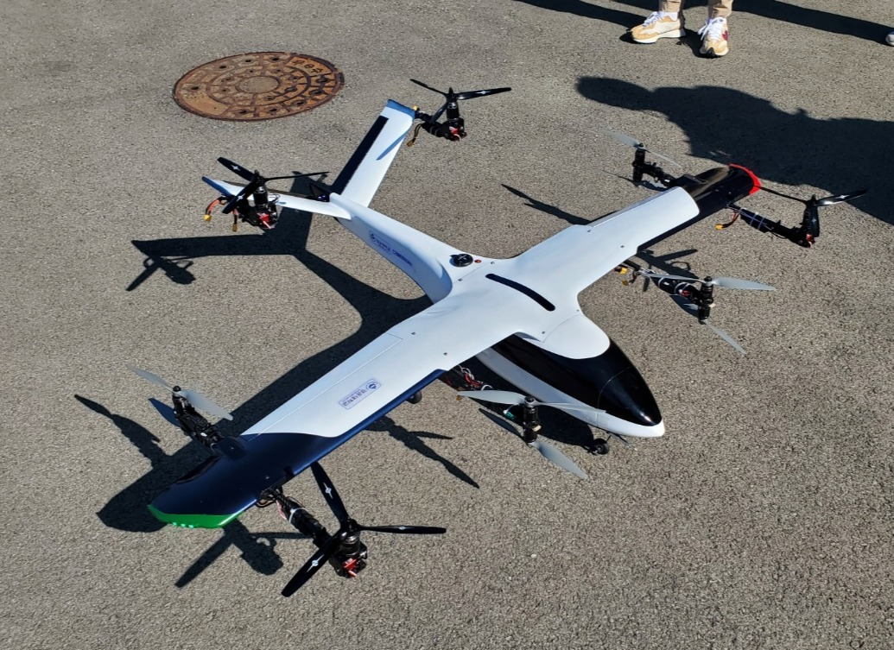
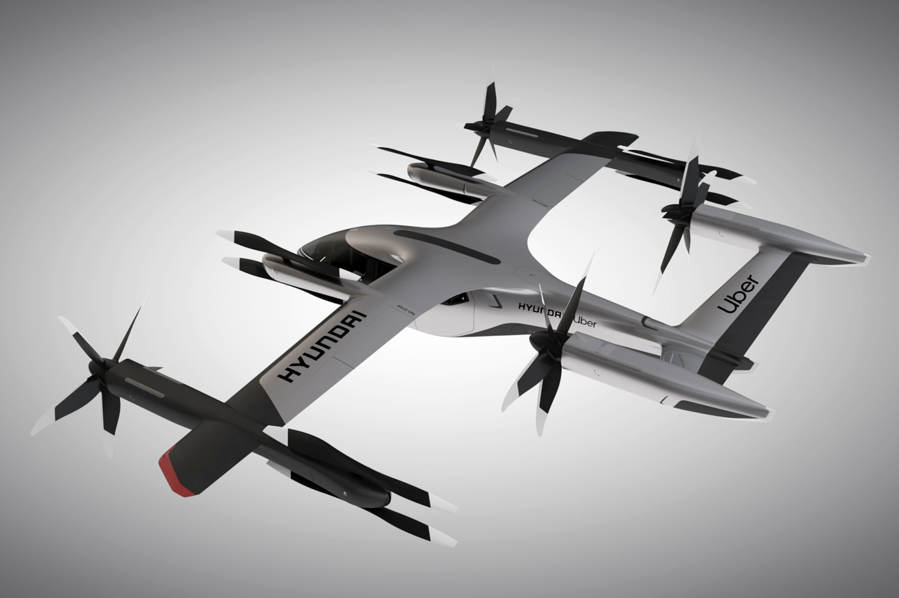
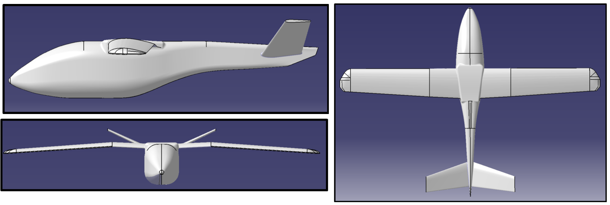
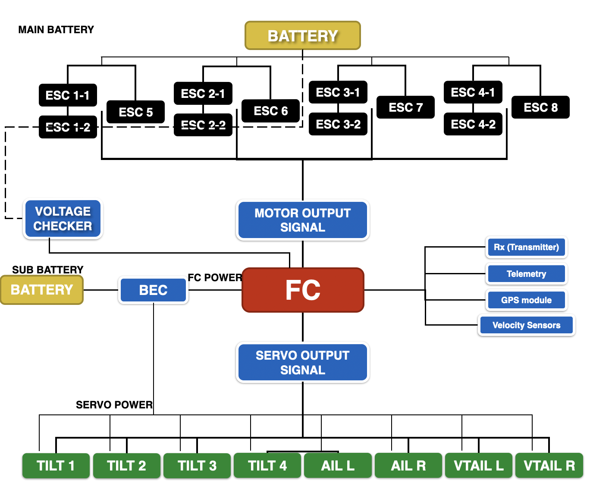
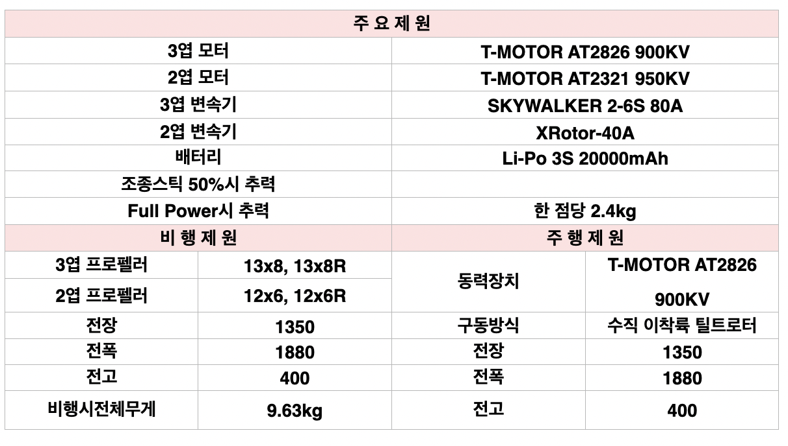

(2nd place) 2021 International PAV Technologies Contest
Personal Aerial Vehicles (PAVs) are emerging as key components in Urban Air Mobility (UAM), aiming to revolutionize urban transport with aerial solutions. Our team participated in the 2021 International PAV Technologies Contest, securing second place and a prize of $13,000 for our innovative approach.


Left: Our downsized PAV prototype | Right: Hyundai PAV model. Our design was inspired by Hyundai's eVTOL aircraft, adapted into a smaller, functional prototype to validate key control dynamics and system integration.
Leveraging the Pixhawk 4 flight controller, we tuned its dynamic control systems using Ardupilot (C++), achieving stable flight and precise control in various test scenarios.
Demonstration of our downsized Hyundai PAV eVTOL model, featuring a 12-motor configuration. This setup allowed us to explore complex dynamics and control strategies for enhanced maneuverability and stability.

Our team meticulously designed the PAV frame using CATIA V5, incorporating considerations for dynamic performance, weight distribution, and structural integrity. The 3D simulations enabled us to refine the design and predict real-world behavior before moving to the construction phase.
Developing a unique tilting mechanism for VTOL operations required innovative thinking, as existing market solutions were not applicable. By designing and simulating various mechanisms in CATIA V5, we were able to refine our approach, ultimately arriving at a functional VTOL tilting system that enhances flight versatility.
Our downsized Hyundai PAV eVTOL model features a sophisticated configuration of 12 motors for the rotors and 3 servo motors dedicated to precise flight controls. This setup allowed us to explore and optimize complex dynamics, enabling enhanced maneuverability and stability across various flight conditions.


Here are our final system spec and system design.